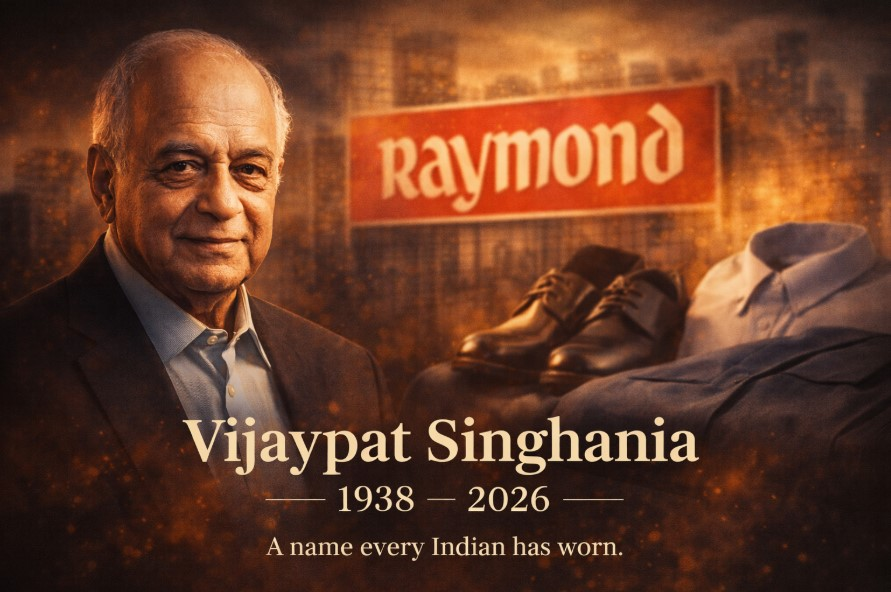

There are some names you don’t consciously remember choosing—yet they quietly become part of your life.
For millions of Indians, Raymond was one such name. A brand worn at life’s most important moments—often without realizing how deeply it was woven into memory.
Today, that legacy feels more personal.
Vijaypat Singhania, the man who built and led Raymond into a household name, has passed away at the age of 87.
For decades, Raymond wasn’t just a textile company—it was a symbol.
At a time when many Indian companies were still shaping their identity, Vijaypat Singhania was already thinking bigger.
Singhania pushed Raymond beyond domestic success into international markets, showcasing Indian capability on a global stage.
His later years saw family disputes unfold publicly, adding complexity to an otherwise disciplined life journey.
Vijaypat Singhania leaves behind more than a business story—he leaves behind a legacy that became part of Indian identity.
A name people wore. A brand people trusted.
Rest in peace. 🙏